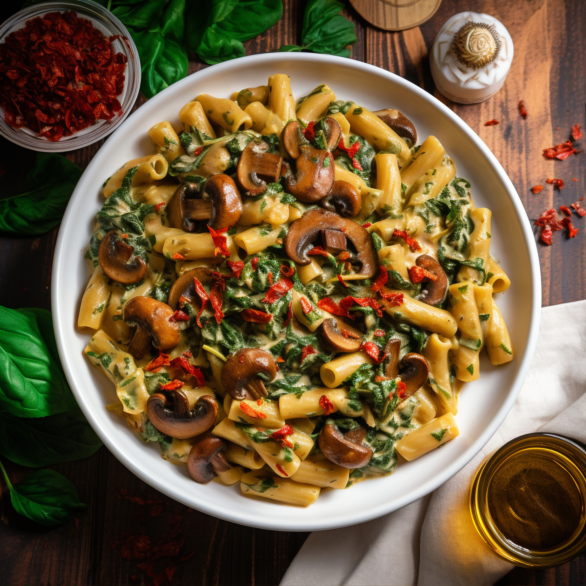

Soul Seasoned Pasta with Goblin Haunch

I assure you, this is *not* mushroom, it is goblin haunch.
This recipe comes at you like a poison dagger from the bushes on an afternoon foraging trip in the forest‐ Bite back with some special seasoning and our ancestor approved preparation methods!
Ingredients:
- Your choice of pasta, this author prefers penne
- Fresh garden‐grown basil, tumeric, oregano, and blood‐leaf sprout [it is required you grow them in your own garden, observing all mandatory rituals as you sacrifice each individual sprout to the autumn winds]
- Ethically sourced Goblin Haunch, sourced from your back‐woods free‐range fey enclosure
- Alfredo sauce with spinach, red pepper flakes, and pesto to taste
The Steps:
- Start with putting a pot on the fire to boil, and affect the ritual of seasons to reduce down the herbs and spices to a nice, palatable consistency. If you observed the proper tenants of sprout‐sacrifice, you‘ll notice a soft blue hue coming from the powder mix‐ that‘s your soul‐essence!
- Once the spice is ready, prepare the goblin haunch as per the method that every person is enlightened to upon their 27th birthday. You know the one. Once the meat has reached the standard non‐euclidian shape we‘re all so familiar with, we can begin the ritual of imbument to confer the spice‐essence upon it.
- As the ritual of imbument will take two fractions of a standard moon cycle to complete, now is the time to add the pasta to your boiling water and put the sauce ingredients together. This author is fine using alfredo sauce from the jar, but make sure that your pepper flakes and pesto mix are sourced separately from your seasoning spices to avoid soul crossover and contamination.
- Add a dash of the pasta water to the finished noodles before mixing the sauces in, and finish by layering the Goblin Haunch over top and allowing a moment for the juices to flow over and mix with your sauce. Serve hot, and enjoy!
*As a precautionary note, while this author is sure our readers are pious and true, this author would be remiss to not make note that if your intention is to recieve focused and useful visions from your soul‐essenced pasta, it is required to observe the proper gratitudes before consumption. Failure to do so will not be the end for you, but it is quite likely the Gods will remind you of your transgression in the form of visions of harmful and damaging truths. You have been warned!
RETURN, PEASANT!